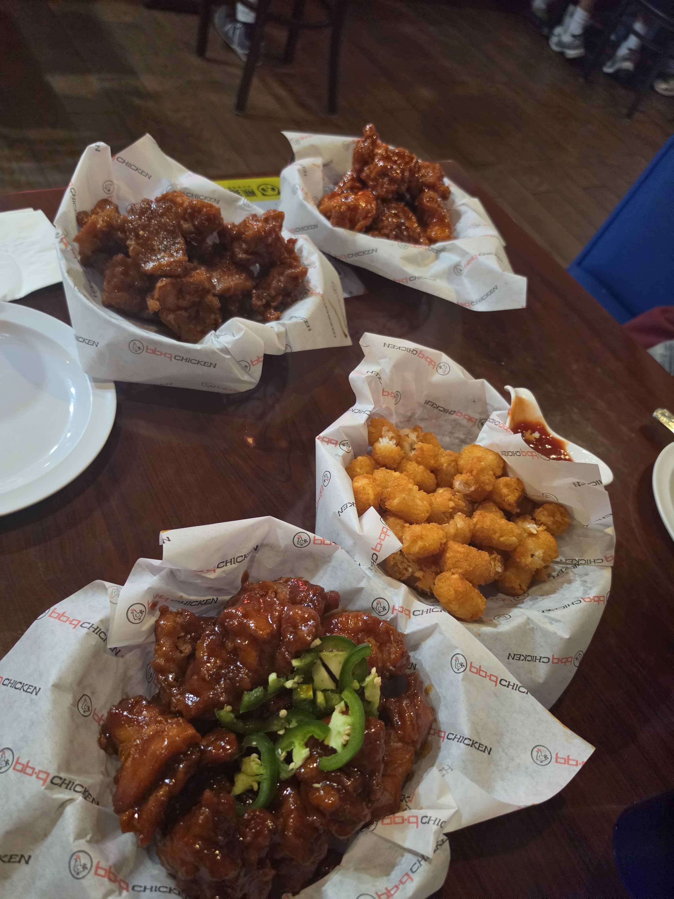
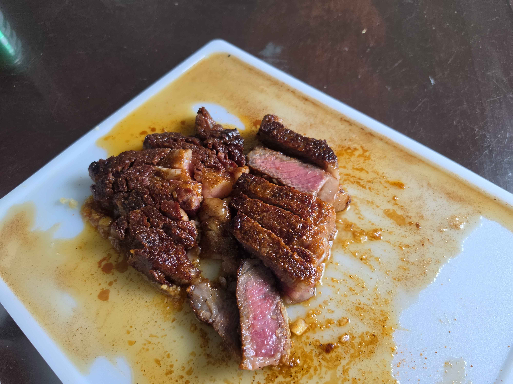
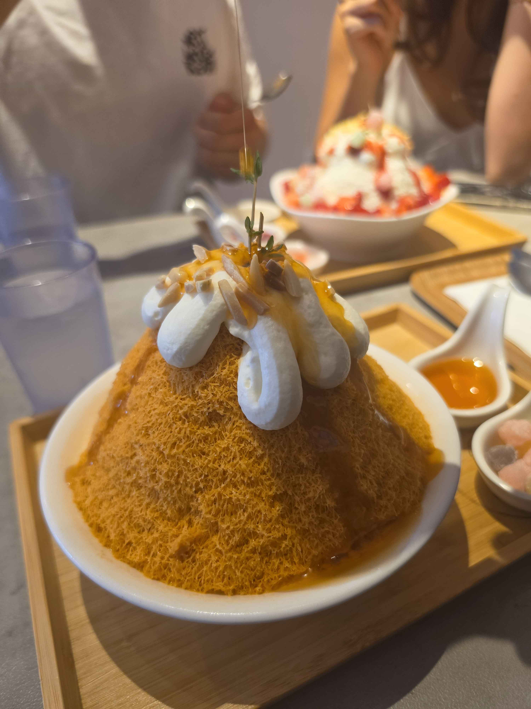
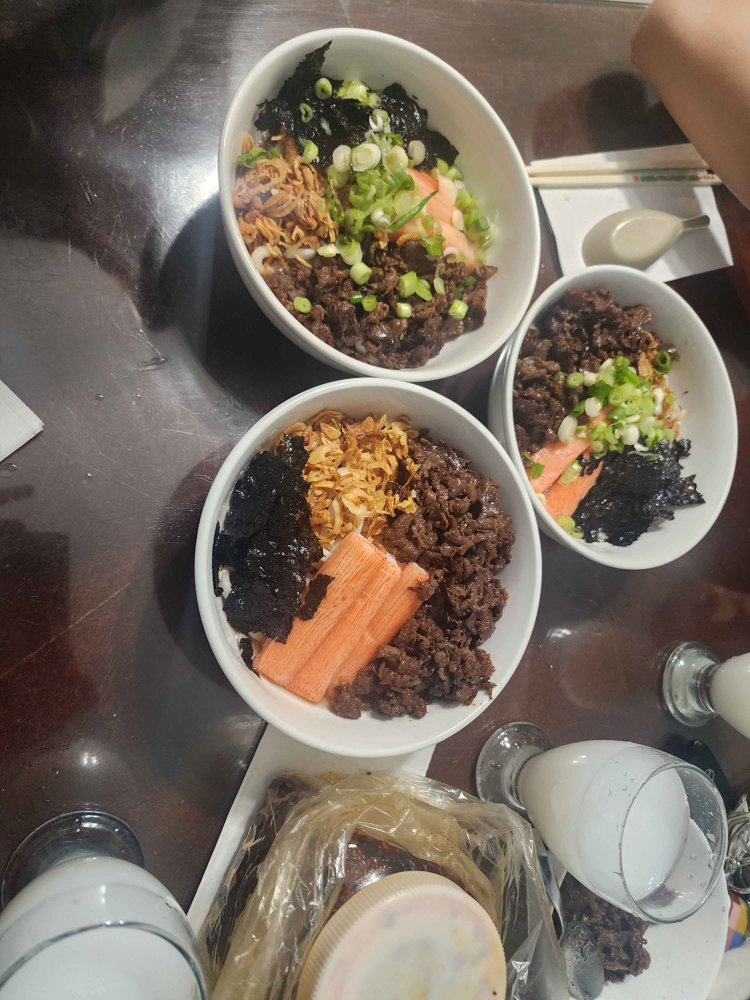
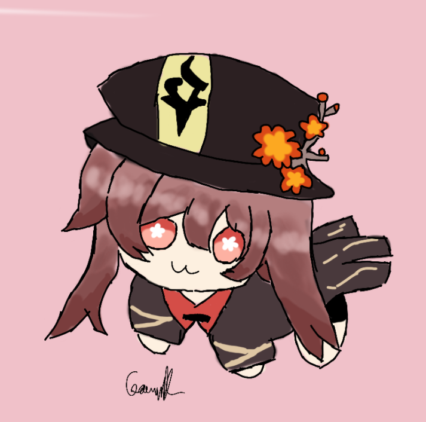
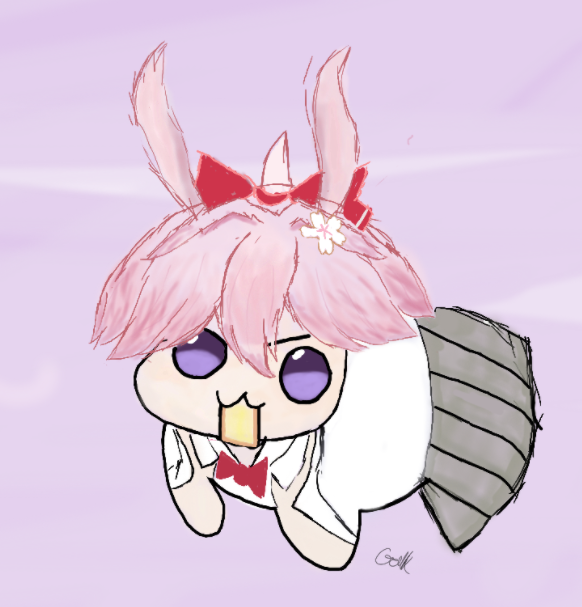
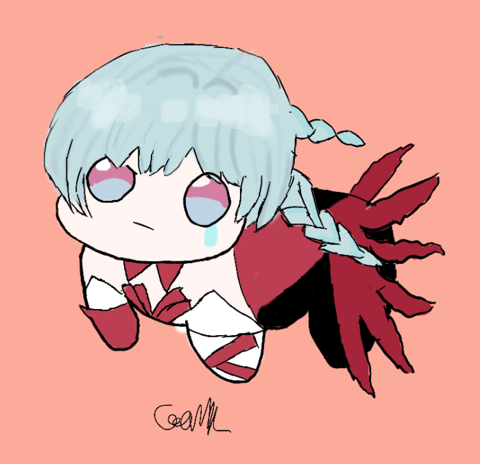
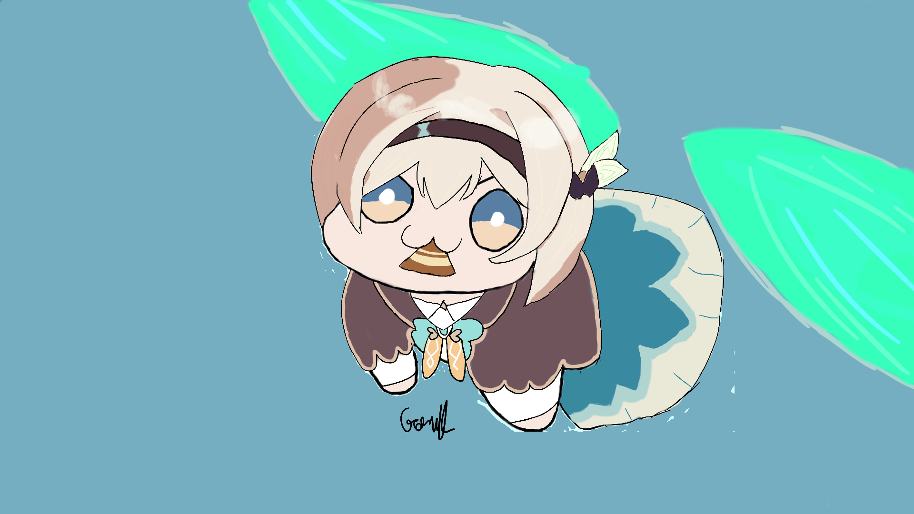

Random
Outside of school, I love to cook, go out to restaurants, or draw characters from video games I played.
Food




Drawings
I also enjoy drawing during my free time. My specific style is called doro, a small creature from the game Nikke: Goddess of Victory. I loved that creature so I decided to draw other video games characters in that style.




Request a Drawing
Have a character you want me to draw? Submit your request using the Google Form below!